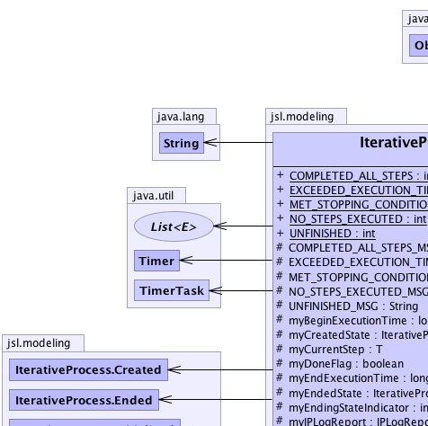
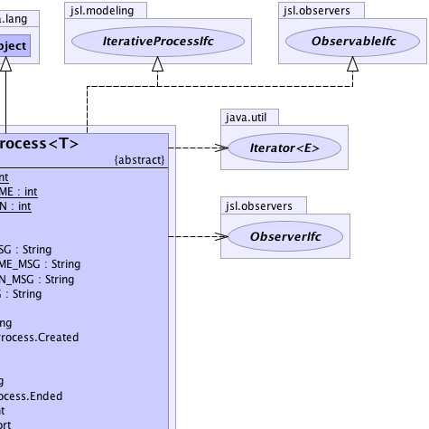
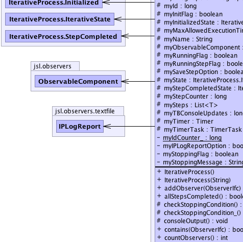
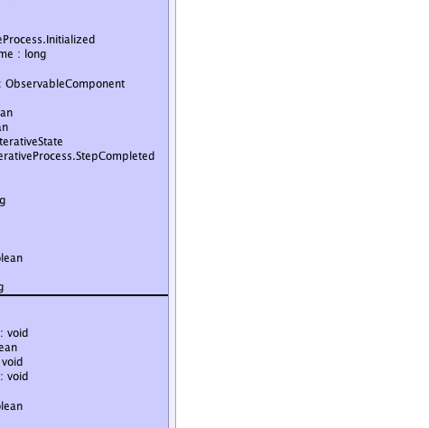
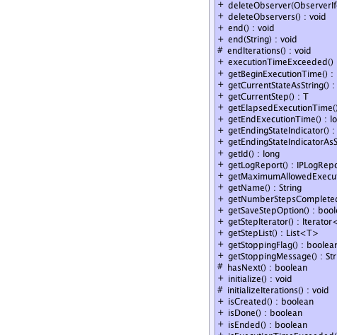
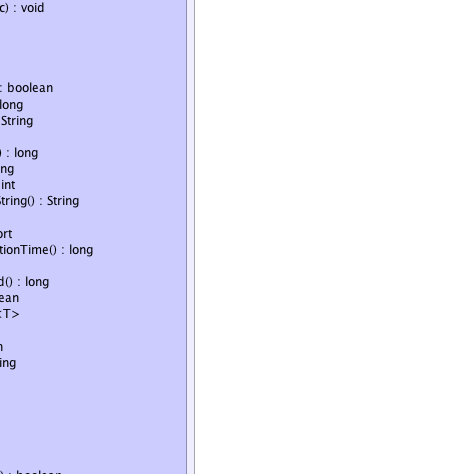
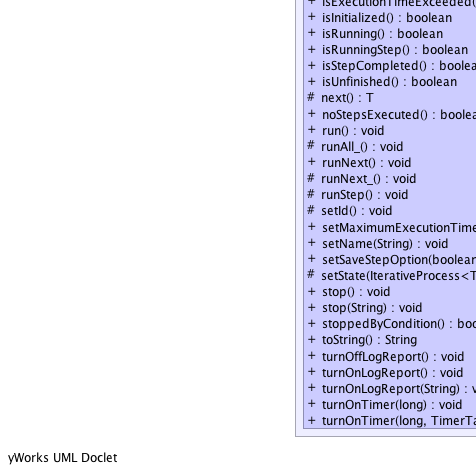
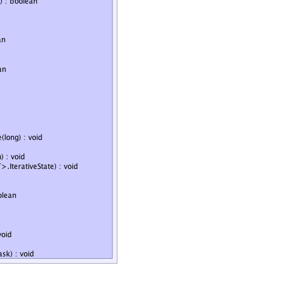

jsl.modeling.IterativeProcess<T>
jsl.modeling.IterativeProcess<T>
|
||||||||||
| PREV CLASS NEXT CLASS | FRAMES NO FRAMES | |||||||||
| SUMMARY: NESTED | FIELD | CONSTR | METHOD | DETAIL: FIELD | CONSTR | METHOD | |||||||||
java.lang.Object
T - public abstract class IterativeProcess<T>
A IterativeProcess is an abstract base class for modeling the execution of a series of steps until some condition is met or until the number of steps have been exhausted. An iterative process will stop when one of the following occurs: a) It has no more steps to execute b) A condition becomes true after a step i) A user supplied (real) time limit has been (approximately) reached ii) Calling the stop() method based on some condition iii) Calling end() when in state Created, Initialized, or StepCompleted An iterative process follows a well defined state transition pattern. An iterative process has the following states: (Created, Initialized, StepCompleted, Ended). An iterative process is first created and placed in the Created state. From the Created state it can transition to Initialized (via initialize()) or Ended (via end()). From the Ended state it can transition to Initialized (via initialize()). From the Initialized state it can transition to StepCompleted (via runNext()) or to Ended (via run() or end()). From the StepCompleted state it can transition back to StepCompleted (via runNext()) or to Ended (via run(), runNext(), or end()). Thus, a common usage of an IterativeProcess is to call initialize() after construction and call runNext() to run each step of the process as needed. An IterativeProcess can also run to completion by calling run(). Subclasses must provide the following abstract protected methods: boolean hasNext(): checks if there is a next step T next(): gets an object that represents the next step void runStep(): causes the next step to execute, if no step exists than a run time exception, NoSuchStepException, will be thrown. If a client attempts an illegal state transition, then a run time exception, IllegalStateException, will be thrown. Sub-classes should also consider overriding initializeIterations() and endIterations() to provide specific initialization logic and logic for after the process ends. When overriding these methods care should be taken to properly call super.initializeIterations() and super.endIterations() otherwise non-determinant behavior will occur. The pattern is general enough to allow IterativeProcesses to run other IterativeProcesses within each step.
|  |  |
|  |  |
|  |  |
|  |  |
| Nested Class Summary | |
|---|---|
protected class |
IterativeProcess.Created
|
protected class |
IterativeProcess.Ended
|
protected class |
IterativeProcess.Initialized
|
protected class |
IterativeProcess.IterativeState
|
protected class |
IterativeProcess.ShowElapsedTimeTask
|
protected class |
IterativeProcess.StepCompleted
|
| Field Summary | |
|---|---|
static int |
COMPLETED_ALL_STEPS
Indicates whether the iterative process has completed running all steps |
protected java.lang.String |
COMPLETED_ALL_STEPS_MSG
Message used when process completes all steps |
static int |
EXCEEDED_EXECUTION_TIME
Indicates whether the iterative process has exceeded its maximum execution time |
protected java.lang.String |
EXCEEDED_EXECUTION_TIME_MSG
Message used when process exceeds its execution time |
static int |
MET_STOPPING_CONDITION
Indicates whether the iterative process ended due to the being stopped |
protected java.lang.String |
MET_STOPPING_CONDITION_MSG
Message used when process stops because it met a condition |
protected long |
myBeginExecutionTime
The wall clock time in milliseconds that the iterative process started |
protected IterativeProcess.Created |
myCreatedState
A reference to the created state for the iterative process A iterative process is in the created state when it is first constructed and can then only transition to the initialized state |
protected T |
myCurrentStep
A reference to an object related to the current step of the process It can be passed to observers |
protected boolean |
myDoneFlag
A flag to indicate whether the iterative process is done A iterative process can be done if: 1) it ran all of its steps 2) it was canceled by a client prior to completing all of its steps 3) it exceeded its maximum allowable execution time before completing all of its steps. |
protected IterativeProcess.Ended |
myEndedState
A reference to the ended state of the iterative process A iterative process is in the ended state after the process is told to end |
protected long |
myEndExecutionTime
The wall clock time in milliseconds that the iterative process ended |
protected int |
myEndingStateIndicator
indicates how the iterative process ended |
protected long |
myId
The id of this object |
private static long |
myIdCounter_
A counter to count the number of created to assign "unique" ids |
protected boolean |
myInitFlag
A flag that indicates whether or not the iterative process has already been initialized, false means it has not been initialized, true means that it has been initialized |
protected IterativeProcess.Initialized |
myInitializedState
A reference to the initialized state of the iterative process A iterative process is in the initialized state after the initialize() method is called from a proper state. |
protected IPLogReport |
myIPLogReport
Used to log state changes |
private boolean |
myIPLogReportOption
Used to indicate whether logging is on |
protected long |
myMaxAllowedExecutionTime
The maximum allowable execution time "wall" clock time for the iterative process to complete processing in milliseconds |
protected java.lang.String |
myName
The name of this step |
protected ObservableComponent |
myObservableComponent
Allows the IterativeProcess to be observable. |
protected boolean |
myRunningFlag
Indicates that the iterative process is running |
protected boolean |
myRunningStepFlag
Indicates if the iterative process is currently running an individual step, true if the step is in progress |
protected boolean |
mySaveStepOption
A flag to indicate whether or not the iterative process will save the steps as they are created and then run in a Collection The default is FALSE (they will be not be saved). |
protected IterativeProcess.IterativeState |
myState
A reference to the current state of the iterative process |
protected IterativeProcess.StepCompleted |
myStepCompletedState
A reference to the step completed state of the iterative process A iterative process is in the step completed state after the runNext method is called from a proper state |
protected long |
myStepCounter
Counts the number of steps executed since the last time the process was initialized |
protected java.util.List<T> |
mySteps
A collection of all the steps that have been run by this iterative process. |
private boolean |
myStoppingFlag
A flag that can be set by the user to stop the process |
private java.lang.String |
myStoppingMessage
Can be set to indicate why the process was stopped via the stopProcessing() method |
protected long |
myTBConsoleUpdates
The time between task invocations for the Timer and its TimerTask |
protected java.util.Timer |
myTimer
A Timer used to perform timed task e.g. displaying information about the IterativeProcess |
protected java.util.TimerTask |
myTimerTask
The task that the timer uses |
static int |
NO_STEPS_EXECUTED
Indicates whether the iterative process haD no steps to run |
protected java.lang.String |
NO_STEPS_EXECUTED_MSG
Message used when process completes all steps |
static int |
UNFINISHED
Indicates that the iterative process is in progress |
protected java.lang.String |
UNFINISHED_MSG
Message used when process is not finished |
| Constructor Summary | |
|---|---|
IterativeProcess()
Constructs an iterative process with default name |
|
IterativeProcess(java.lang.String name)
Constructs an iterative process with the given name |
|
| Method Summary | |
|---|---|
void |
addObserver(ObserverIfc observer)
Allows the adding (attaching) of an observer to the observable |
boolean |
allStepsCompleted()
The iterative process may end by a variety of means, this method checks if the iterative process ended because it ran all of its steps |
protected void |
checkStoppingCondition_()
|
protected void |
checkStoppingCondition()
|
protected void |
consoleOutput()
Can be overwritten by subclasses to have output when the console flag is on |
boolean |
contains(ObserverIfc observer)
Returns true if the observer is already attached |
int |
countObservers()
Returns how many observers are currently observing the observable |
void |
deleteObserver(ObserverIfc observer)
Allows the deletion (removing) of an observer from the observable |
void |
deleteObservers()
Deletes all the observers from the observable |
void |
end()
The iterative process will continue until there are no more steps or its maximum execution time has been reached, whichever comes first. |
void |
end(java.lang.String msg)
The iterative process will continue until there are no more steps or its maximum execution time has been reached, whichever comes first. |
protected void |
endIterations()
|
boolean |
executionTimeExceeded()
The iterative process may end by a variety of means, this method checks if the iterative process ended because it timed out |
long |
getBeginExecutionTime()
Returns system time in milliseconds that the iterative process started |
java.lang.String |
getCurrentStateAsString()
Gets the current state as a string |
T |
getCurrentStep()
Returns the current step for the iterative process the step that is or has just completed processing Note: Sub-classes are responsible for properly setting the current step when a step is run via runStep() |
long |
getElapsedExecutionTime()
Gets the clock time in milliseconds since the iterative process was initialized |
long |
getEndExecutionTime()
Returns system time in milliseconds that the iterative process ended |
int |
getEndingStateIndicator()
Returns the ending state indicator |
java.lang.String |
getEndingStateIndicatorAsString()
Returns a string representation of the ending state indicator COMPLETED_ALL_STEPS_MSG EXCEEDED_EXECUTION_TIME_MSG MET_STOPPING_CONDITION_MSG UNFINISHED_MSG |
long |
getId()
Returns the id for this iterative process |
IPLogReport |
getLogReport()
Returns a reference to the current log report. |
long |
getMaximumAllowedExecutionTime()
Returns maximum (real) clock time allocated for the iterative process |
java.lang.String |
getName()
Gets the name. |
long |
getNumberStepsCompleted()
Returns the number of steps completed since the iterative process was last initialized |
boolean |
getSaveStepOption()
Gets the save step option, true means that the steps will be saved by the iterative process into a Collection after running |
java.util.Iterator<T> |
getStepIterator()
Returns an iterator to the saved steps |
java.util.List<T> |
getStepList()
Returns an unmodifiable list view of the steps that have been saved |
boolean |
getStoppingFlag()
Returns the stopping flag |
java.lang.String |
getStoppingMessage()
A string message for why stop() was called. |
protected abstract boolean |
hasNext()
This method should check to see if another step is necessary for the iterative process. |
void |
initialize()
Initializes the iterative process prior to running any steps This must be done prior to calling runNext(); |
protected void |
initializeIterations()
|
boolean |
isCreated()
Checks if the iterative process is in the created state. |
boolean |
isDone()
A flag to indicate whether the iterative process is done A iterative process can be done if: 1) it ran all of its steps 2) it was ended by a client prior to completing all of its steps 3) it ended because it exceeded its maximum allowable execution time before completing all of its steps. 4) its end condition was satisfied |
boolean |
isEnded()
Checks if the iterative process is in the ended state After the iterative process has been ended this method will return true |
boolean |
isExecutionTimeExceeded()
Returns if the elapsed execution time exceeds the maximum time allowed. |
boolean |
isInitialized()
Checks if the iterative process is in the initialized state After the iterative process has been initialized this method will return true |
boolean |
isRunning()
An iterative process is running if it is been told to run (i.e. |
boolean |
isRunningStep()
Indicates that the iterative process is currently running an individual step |
boolean |
isStepCompleted()
Checks if the iterative process is in the completed step state After the iterative process has successfully completed a step this method will return true |
boolean |
isUnfinished()
The iterative process may end by a variety of means, this method checks if the iterative process ended but was unfinished, not all steps completed |
protected abstract T |
next()
This method should return the next step to be executed in the iterative process or null if no more steps can be executed. |
boolean |
noStepsExecuted()
Indicates that the iterative process ended because of no steps |
void |
run()
Runs all of the steps of the iterative process. |
protected void |
runAll_()
Runs all of the steps. |
protected void |
runNext_()
|
void |
runNext()
Runs the next step in the iterative process |
protected abstract void |
runStep()
This method tells the iterative process to execute the current step. |
protected void |
setId()
Can be overridden to supply a unique id to the object By default a simple static counter is used to assign a number as instances are created |
void |
setMaximumExecutionTime(long milliseconds)
Set the maximum allotted (suggested) execution (real) clock for the entire iterative process. |
void |
setName(java.lang.String str)
Sets the name |
void |
setSaveStepOption(boolean option)
Sets the save step option, true means that the steps will be saved by the iterative process into a Collection after running |
protected void |
setState(IterativeProcess.IterativeState state)
The method is used to set the state and notify observers of the change |
void |
stop()
This sets a flag to indicate to the process that is should stop after the next step is completed. |
void |
stop(java.lang.String msg)
This sets a flag to indicate to the process that is should stop after the next step is completed. |
boolean |
stoppedByCondition()
The iterative process may end by a variety of means, this method checks if the iterative process ended because it was stopped |
java.lang.String |
toString()
Gets a string for the iterative process. |
void |
turnOffLogReport()
Turns off log reporting. |
void |
turnOnLogReport()
Turns on the log report. |
void |
turnOnLogReport(java.lang.String name)
Turns on the log report. |
void |
turnOnTimer(long milliseconds)
This method will cause the a timer to start allowing a TimerTask to be scheduled. |
void |
turnOnTimer(long milliseconds,
java.util.TimerTask timerTask)
This method will cause the a timer to start allowing a TimerTask to be scheduled. |
| Methods inherited from class java.lang.Object |
|---|
clone, equals, finalize, getClass, hashCode, notify, notifyAll, wait, wait, wait |
| Field Detail |
|---|
private static long myIdCounter_
public static final int NO_STEPS_EXECUTED
public static final int COMPLETED_ALL_STEPS
public static final int EXCEEDED_EXECUTION_TIME
public static final int MET_STOPPING_CONDITION
public static final int UNFINISHED
protected java.lang.String NO_STEPS_EXECUTED_MSG
protected java.lang.String COMPLETED_ALL_STEPS_MSG
protected java.lang.String EXCEEDED_EXECUTION_TIME_MSG
protected java.lang.String MET_STOPPING_CONDITION_MSG
protected java.lang.String UNFINISHED_MSG
protected long myId
protected java.lang.String myName
protected long myBeginExecutionTime
protected long myEndExecutionTime
protected long myMaxAllowedExecutionTime
protected boolean myDoneFlag
protected boolean myRunningFlag
protected boolean myRunningStepFlag
protected int myEndingStateIndicator
protected T myCurrentStep
protected java.util.List<T> mySteps
protected boolean mySaveStepOption
protected IPLogReport myIPLogReport
private boolean myIPLogReportOption
private java.lang.String myStoppingMessage
private boolean myStoppingFlag
protected IterativeProcess.IterativeState myState
protected IterativeProcess.Created myCreatedState
protected IterativeProcess.Initialized myInitializedState
protected IterativeProcess.StepCompleted myStepCompletedState
protected IterativeProcess.Ended myEndedState
protected java.util.Timer myTimer
protected long myTBConsoleUpdates
protected java.util.TimerTask myTimerTask
protected boolean myInitFlag
protected long myStepCounter
protected ObservableComponent myObservableComponent
| Constructor Detail |
|---|
public IterativeProcess()
public IterativeProcess(java.lang.String name)
name - | Method Detail |
|---|
public final java.lang.String getName()
getName in interface IdentityIfcpublic final void setName(java.lang.String str)
setName in interface IterativeProcessIfcstr - The name as a string.public final long getId()
getId in interface IdentityIfcprotected final void setId()
public java.lang.String toString()
toString in class java.lang.Objectpublic final java.lang.String getCurrentStateAsString()
public final int getEndingStateIndicator()
public java.lang.String getEndingStateIndicatorAsString()
public final boolean isDone()
isDone in interface IterativeProcessIfcpublic final boolean isCreated()
IterativeProcessIfc
isCreated in interface IterativeProcessIfcpublic final long getBeginExecutionTime()
getBeginExecutionTime in interface IterativeProcessIfcpublic final long getElapsedExecutionTime()
IterativeProcessIfc
getElapsedExecutionTime in interface IterativeProcessIfcpublic final long getEndExecutionTime()
IterativeProcessIfc
getEndExecutionTime in interface IterativeProcessIfcpublic final long getMaximumAllowedExecutionTime()
IterativeProcessIfc
getMaximumAllowedExecutionTime in interface IterativeProcessIfcpublic final void setMaximumExecutionTime(long milliseconds)
IterativeProcessIfc
setMaximumExecutionTime in interface IterativeProcessIfcpublic final java.lang.String getStoppingMessage()
IterativeProcessIfc
getStoppingMessage in interface IterativeProcessIfcpublic final boolean getSaveStepOption()
public final void setSaveStepOption(boolean option)
option - public final java.util.Iterator<T> getStepIterator()
public final java.util.List<T> getStepList()
public final T getCurrentStep()
public final long getNumberStepsCompleted()
IterativeProcessIfc
getNumberStepsCompleted in interface IterativeProcessIfcpublic final void turnOnLogReport()
IterativeProcessIfc
turnOnLogReport in interface IterativeProcessIfcpublic void turnOnLogReport(java.lang.String name)
IterativeProcessIfc
turnOnLogReport in interface IterativeProcessIfcname - specifies a prefix name for the reportpublic void turnOffLogReport()
IterativeProcessIfc
turnOffLogReport in interface IterativeProcessIfcpublic final IPLogReport getLogReport()
IterativeProcessIfc
getLogReport in interface IterativeProcessIfcpublic final void turnOnTimer(long milliseconds)
IterativeProcessIfc
turnOnTimer in interface IterativeProcessIfc
public final void turnOnTimer(long milliseconds,
java.util.TimerTask timerTask)
IterativeProcessIfc
turnOnTimer in interface IterativeProcessIfcpublic final boolean isInitialized()
IterativeProcessIfc
isInitialized in interface IterativeProcessIfcpublic final boolean isRunning()
IterativeProcessIfc
isRunning in interface IterativeProcessIfcpublic final boolean isRunningStep()
IterativeProcessIfc
isRunningStep in interface IterativeProcessIfcpublic final boolean isStepCompleted()
IterativeProcessIfc
isStepCompleted in interface IterativeProcessIfcpublic final boolean isEnded()
IterativeProcessIfc
isEnded in interface IterativeProcessIfcpublic final boolean noStepsExecuted()
IterativeProcessIfc
noStepsExecuted in interface IterativeProcessIfcpublic final boolean allStepsCompleted()
IterativeProcessIfc
allStepsCompleted in interface IterativeProcessIfcpublic final boolean executionTimeExceeded()
IterativeProcessIfc
executionTimeExceeded in interface IterativeProcessIfcpublic final boolean stoppedByCondition()
IterativeProcessIfc
stoppedByCondition in interface IterativeProcessIfcpublic final boolean isUnfinished()
IterativeProcessIfc
isUnfinished in interface IterativeProcessIfcpublic final void initialize()
IterativeProcessIfc
initialize in interface IterativeProcessIfcpublic final void runNext()
IterativeProcessIfc
runNext in interface IterativeProcessIfcpublic final void run()
IterativeProcessIfc
run in interface IterativeProcessIfcpublic final void stop(java.lang.String msg)
IterativeProcessIfc
stop in interface IterativeProcessIfcmsg - A string to represent the reason for the stoppingpublic final void stop()
IterativeProcessIfc
stop in interface IterativeProcessIfcpublic final boolean getStoppingFlag()
IterativeProcessIfc
getStoppingFlag in interface IterativeProcessIfcpublic final void end(java.lang.String msg)
end in interface IterativeProcessIfcmsg - an option message to indicate the reason for stoppingpublic final void end()
end in interface IterativeProcessIfcprotected abstract boolean hasNext()
protected abstract T next()
protected abstract void runStep()
protected void consoleOutput()
public boolean contains(ObserverIfc observer)
ObservableIfc
contains in interface ObservableIfcpublic final void deleteObservers()
ObservableIfc
deleteObservers in interface ObservableIfcpublic final void deleteObserver(ObserverIfc observer)
ObservableIfc
deleteObserver in interface ObservableIfcpublic final int countObservers()
ObservableIfc
countObservers in interface ObservableIfcpublic final void addObserver(ObserverIfc observer)
ObservableIfc
addObserver in interface ObservableIfcpublic final boolean isExecutionTimeExceeded()
isExecutionTimeExceeded in interface IterativeProcessIfcprotected final void setState(IterativeProcess.IterativeState state)
state - protected void initializeIterations()
protected final void runAll_()
protected void runNext_()
protected void checkStoppingCondition()
protected void checkStoppingCondition_()
protected void endIterations()
|
||||||||||
| PREV CLASS NEXT CLASS | FRAMES NO FRAMES | |||||||||
| SUMMARY: NESTED | FIELD | CONSTR | METHOD | DETAIL: FIELD | CONSTR | METHOD | |||||||||